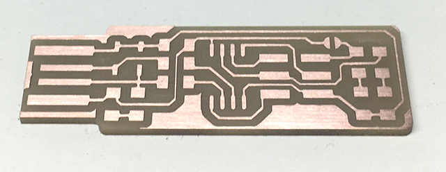
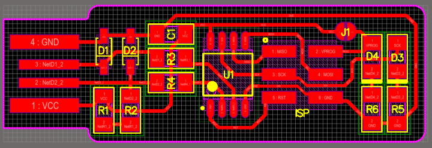

Lýsing á verkefni: Smíða litla rafrás
Fyrsti hluti fyrsta verkefnis var að útbúa litla rafrás. Rafrásin sem um ræðir er til fyrir og því er í raun um kynningu á ferlinu á hönnun rafrása að ræða. Kynningu á umræddri rafrás má finna hér: Building the FabTinyISP. Þessi litli forriti er „hæg-vinnt" USB 1.1 tæki. Og er hægasta týpa af USB tækjum. Forritinn starfar á 1.5 MHz.
Fyrsta verkefni þegar að á smíða FabTinyISP (hér eftir FTI) er að fræsa út borðið sem íhlutirnir fara á. Á PCB-plastborðinu er 0.1 mm koparhúð efst en í hana fræsti ég rásirnar. Fræsing og uppsetning rása var klár þegar ég mætti. En sniðmát bæði borðsins og skurðar meðfram borðinu má finna inni á vefsíðunni sem er gefin hér að ofan.
Uppsetning var þokkalega einföld en hugbúnaðurinn sem fylgdi fræsaranum bauð upp á alla þá helstu valkosti sem Hafliði hafði kynnt fyrir okkur í síðasta tíma; Stilla núllpunkt, hækka og lækka Z-ásinn o.s.frv.. Fræsing forritarans var fræst út með 4mm fræsingu en skurðurinn umhverfis borðið með 8 mm. Þar sem þetta eru tiltölulega lítil verkfæri í litlu rými var það fyrst örlítið krefjandi að athafna sig en það gekk þó vel og blessunarlega braut ég verfærin ekki, en þau er mjög brothætt.
Að lokinni fræsingu ætti borðið að lýta svona út. Það getur þó komið fyrir að einhverjar koparagnir slípist ekki alveg frá borðinu en þá má skafa þær varlega burt með dúkahníf eða öðru slíku.
Íhlutirnar sem á að lóða á borðið eru eftirfarandi:
- 1x ATtiny45
- 2x 1kΩ viðnám
- 2x 499Ω viðnám
- 2x 49Ω viðnám
- 2x 3.3v zener díóður
- 2x LED díóður
- 1x 100nF þéttir
- 1x 2x3 pin header
Lóðunin gekk ágætlega. Þá var lóð-penni stilltur í hæsta hittastig eða um 300°C og smá tin brætt á hann og loks skolað í blautum svmapi til að gera hann örlítið meira skínandi og auðveldari í meðferð. Ég byrjaði svo á að lóða viðnámin á en las verkefnalýsinguna vitlaust svo í staðinn fyrir að hafa 2x 499Ω og 2x 49Ω viðnám var með fjögur af stærri gerðinni. Ég lagaði það þó eftir spennu- og villugreiningu frá Hafliða. EFtir að viðnámin voru komin á setti ég þéttinn á. Allt eru þetta íhlutir sem geta snúið á hvorn vegin sem er en svo fóru málin að flækjast örlítið. Íhlutirnir eru allir tiltölulega litlir og því erfitt að meðhöndla þá og sjá hvað á þeim stendur. Auk þess var töngin sem ég var með örlítið mögnuð og því segull í henni sem oft tók í íhlutina gegn mínum vilja. Annað vandamál sem var mjög algengt hjá mér eg samnemendum mínum var ofgnótt af tini sem brætt var á borðið og þá þarf að hreinsa það upp. Það er gert með því að leggja koparvír ofan á „tinklessuna" og þegar bráðið tinið snertir koparinn myndast mikil yfirborðsspenna sem gerir það að verkum að koparinn gleypir í sig enn meira tin. Þannig má í raun sjúga upp tin. Þetta krafðist þó líka æfingar og ég hefði í raun viljað vera allan daginn að prófa mig áfram bæði í að lóða og gera borðin fín og snyrtileg.


Að lokum var komið að því að athuga hvort rafrásinn virkaði. Góð þumalputtaregla er að spennumæla allt borðið áður en nokkru er stungið í samband við rafmagn. Þá var spennumælir notaður og stuðst við eftirfarandi mynd til að spenna sem kæmi til dæmis frá VCC spennurás myndi ekki finnast á rásum ætluðum jörð. Þá gæti komið skammhlaup sem gæti alltaf orðið dýrkeypt.
Þegar rafás sem þessi er prófuð í fyrsta sinn er alls ekki vitlaust að stinga henni ekki strax í rándýa tölvu. Eins og áður sagði þá getur það verið dýrkeypt. Því er notast við RaspberryPi tölvu og hún tengd við fartölvu þráðlaust. Þá er hægt að skoða hvort RaspberryPi lesi rafrásina eða ekki. En til þess að RaspberryPi lesi tölvuna þarf fyrst að forrita rafrásina. Það er gert með því að taka afrit af forriti sem var nú þegar á annarri rafrás. Þetta er allt gert í gegnum Linux-stýrikerfi. Hafliði sá um að sýna mér hvernig þetta er gert og við náðum að forrita ATtiny45 „heilann" en hins vegar kom upp óútskýrð villa sem við náðum ekki að finna út úr í tímanum en verður vonandi komið í lag fyrir næstu viku.